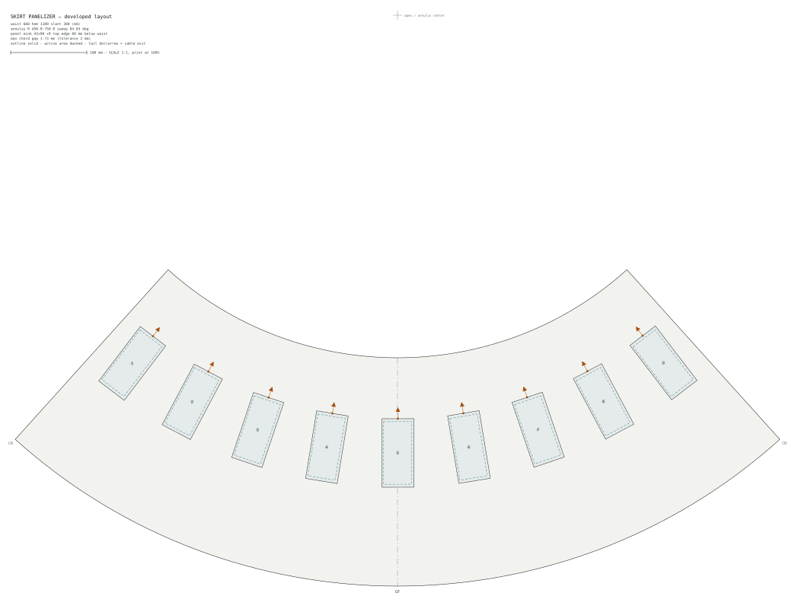

E-Ink Skirt Panelizer
A design tool for placing rigid e-ink panels on a bell-shaped skirt — solving the placement in the garment's exact flat development, where a curved problem becomes a drawable one.
01Premise
Rigid display panels and fabric disagree about geometry: the panel is a flat plane, the garment is curved. A short, stiff bell skirt is the friendliest possible battleground, because a truncated cone is developable — it unrolls exactly, with zero distortion, onto a flat annular sector. Three tape-measure numbers (waist circumference, hem circumference, slant height) fully determine that sector, and every placement decision can then be made in flat 2D with ordinary rulers and angles, knowing it will wrap back onto the body without stretching or creasing.
This first version handles the skirt only: one panel size, one concentric course of panels, no GUI — a Python tool that emits a 1:1-scale SVG pattern and a placement report.
02Method
The skirt (waist 660 mm, hem 1100 mm, slant 300 mm) unrolls to an annulus with inner radius 450 mm, outer radius 750 mm, and an 84° sweep. Panels are defined in a separate YAML library — outline, active display area with its offset, flex-cable exit point and direction, minimum bend radius — validated hard on load so a typo fails the run rather than silently shifting a display.
Placement puts nine panels in one course, long axes along the cone's ruling lines, cable tails toward the waist. The symmetry constraint deliberately applies to the active areas, not the outlines: e-ink modules carry their glass off-center, so centering outlines would visibly de-center the images. The active-area centers sit at uniform angular pitch, mirror-symmetric about center front, with the odd middle panel's display dead on the centerline — outline and tail positions are then derived per panel, never mirrored. Allowed per-panel transforms are identity and 180° rotation only, and any transform that would point a cable tail toward the hem is rejected.
Rigidity gets its own check: a flat panel of width w bridging a surface of local radius R lifts off by roughly w²/8R at the chord center. The tool computes that gap for every panel — using the cone's transverse curvature radius at the panel's waist-side edge, the worst case — and warns when it exceeds tolerance (2 mm by default). Here: 1.73 mm, passing, but with little to spare — a wider module or a higher course would tip it over.
03The Developed Layout
The pattern below is the actual tool output, committed as a static file — the generator runs offline and this page just shows its results. The SVG is drawn at true 1:1 scale (about a metre wide; the 100 mm bar verifies a full-size print), so it can be plotted and wrapped around a toile directly. Solid rectangles are panel outlines, dashed ones the active display areas, and each dot-and-arrow marks where a flex cable exits and heads for the waistband.

skirt/skirt-panel-layout.svg — open the raw file for the print-scale original.
{kind=link}
The placement report from the same run:
loading skirt/placement-report.txt …
04Next
The YAML panel library already accepts multiple sizes; the placement engine doesn't use them yet. Planned from here: multiple courses at different radii, real tail routing that respects each cable's minimum bend radius instead of just reporting straight runs, and mixed panel sizes within a course. The generator lives in the repo at tools/skirt-panelizer/, outside the site build — it runs by hand and only its committed outputs appear here.